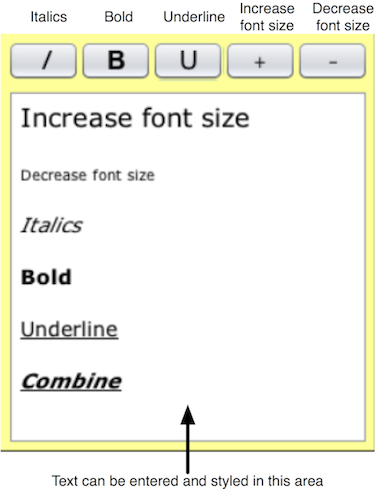
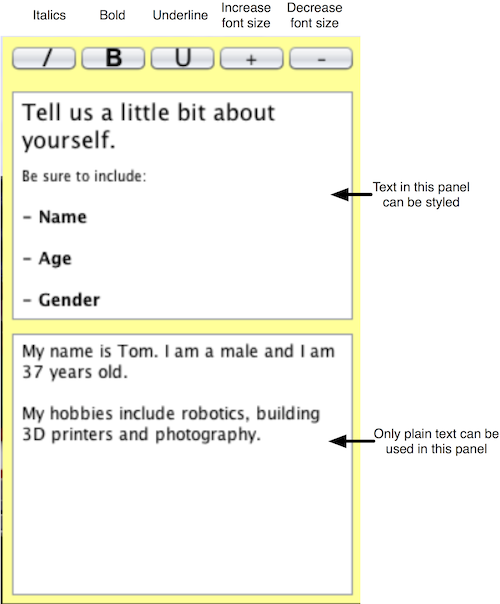

Sticky Note Module
The sticky note module adds four new cell types to the world.
1.) Sticky note: A simple text box where you can write plain text notes.
2.) Task sticky note: Tracks the status of a to-do item.

3.) Styled sticky note: A simple text box where you can write styled text notes

4.) Sectioned sticky note: A sectioned text box where you can write styled text notes in the top portion and plain text notes in the bottom portion and intended for presenting open-ended questions in-world.

How do I build the module?
Instructions:
1.) Download from SVN
2.) Enter the stickynote directory
3.) Type the following at the command prompt and press enter:
ant clean && ant
4.) Install the module as follows
4a.) If your OWL server is running, execute the following from within the stickynote directory:
ant deploy
4b.) Alternately, you can install from the "Manage Modules" section of the server admin pages by selecting "Browse" under the "Install a New Module" section. Navigate to the "dist" subdirectory of the stickynote directory. Select the "stickynote.jar" file. Select "Open". Then select "Install" and follow the on-screen instructions.
How do I insert it in world?
To add any type of sticky note in world, the sticky note module must first be installed on your server. Installation instructions are included below.
Sticky notes are added by selecting "Insert"-->"Object" and then selecting the type of sticky note you wish to insert from the list of objects. Following this, select "Insert". You will be presented with your selection in world.
How do I use it?
To edit any type of sticky note, take control by right clicking on the note and selecting "Take Control". Alternately, you can hold the shift button while selecting the note with the left mouse button.

When you are done you can release control by clicking the "Release Control" button in the top right corner of the 3D window. Alternately, you can hold the shift button while selecting anywhere on the screen outside of the sticky note area with the left mouse button.
To add quick access to status information you can adjust the color of sticky note notes using the "Change Color" item in the context menu of sticky notes.
Task sticky note
The task note has fields for tracking the status of a to-do item. The sticky note has two different view states. The default state is "Collapsed". When the note is collapsed you will only see the task name. You can take control of a sticky note to expand it to view all of the task details. Click the down arrow to expand the note. Note: Only you will see the note has been expanded. You can click the "up" arrow or the "x" to collapse the sticky note back to its original state.
Styled sticky note
The styled sticky note has controls for changing the style of text in the note. To change the style of text in the note, click and drag to select the text you wish to style, then select one of the style buttons. See figure below.

Sectioned Sticky Note
The sectioned sticky note has controls for changing the style of text in the note only in the top panel. Text in the bottom panel is not able to be styled. To change the style of text in the note, click and drag to select the text you wish to style, then select one of the style buttons. See figure below.

Known Issues
In order to add multiple styles to a text selection, the text must be selected again after each style is added.
Contacts
For sticky note and styled sticky note:
mymegabyte@dev.java.net
For styled sticky note and sectioned sticky note:
http://isocial.missouri.edu